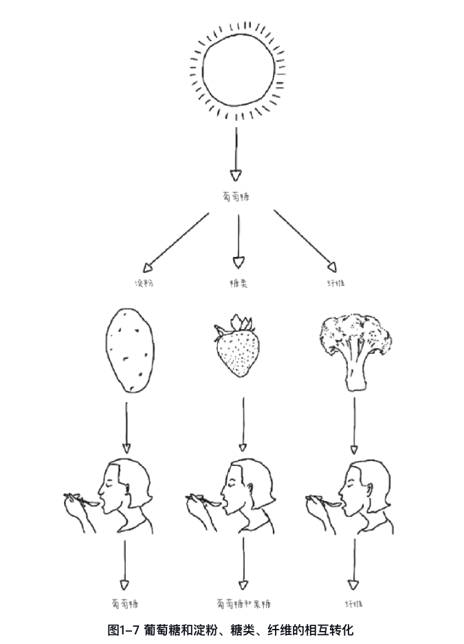
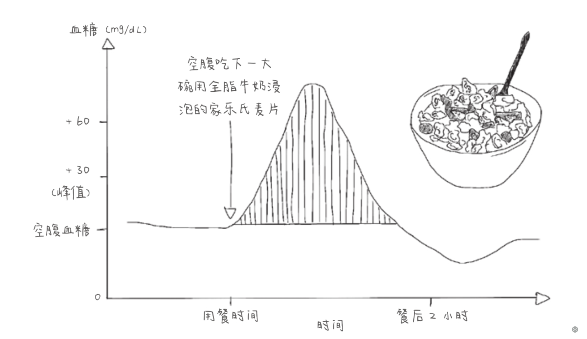
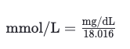

淀粉、纤维、果糖和蔗糖。
淀粉：由 α-淀粉酶 转化为葡萄糖
果糖：部分果糖被转化为葡萄糖，另一部分则继续以果糖的形式存在。果糖和葡萄糖都能够通过肠壁细胞进入我们的血液。葡萄糖是我们身体所需要的燃料，但果糖不是。现在的状况是，我们吃了很多不必要的果糖，因为我们吃了太多的蔗糖（一份蔗糖中的一半是葡萄糖，另外一半是果糖）。
纤维：纤维不能被分解为葡萄糖，但对消化系统有益，不被身体吸收。
蔗糖：由葡萄糖和果糖组成，进入体内后迅速分解，只要1纳秒（十亿分之一秒）。

淀粉、纤维、糖类（葡萄糖、果糖、蔗糖）共同构成碳水化合物家族。
葡萄糖对我们的身体细胞特别重要，当确实无法从外界摄入葡萄糖时，身体还可以自己生成葡萄糖。
虽然人不能进行光合作用，不能通过空气、水和阳光生成葡萄糖，但是，身体可以通过食物来生成葡萄糖，如通过脂肪或蛋白质产生葡萄糖。肝脏则通过一种被称为“糖原异生"的过程，来完成这一目标。
我们的身体甚至还能进一步地自我调节: 当葡萄糖很少时，身体的很多细胞能够在必要时将脂肪作为能量。这就是代谢灵活性。(只能依赖葡萄糖的细胞是红细胞。)
事实上，一些饮食方法，如阿特金斯饮食法"和生酮饮食法"就是通过刻意限制碳水化合物的摄入量，让人体内的葡萄糖处于个极低的水平，来刺激身体通过燃烧脂肪来提供能量。这种方法被称为营养酮症，也是代谢灵活性在实践中的应用。
不管空腹血糖的数值是多少，我们的目标是避免出现峰值，因为由峰值引起的变异才是最大的问题。正是多年来日复一日的葡萄糖峰值使我们的空腹血糖水平慢慢升高，可只有当血糖水平达到了糖尿病前期的标准，我们才会有所察觉，而到那时，身体早已受到了损伤。

使血糖曲线平稳化的方式就是降低血糖水平的变化幅度。我们的血糖水平变化越小，健康状况就会越好。
有时我们测到吃甜食（如纸杯蛋糕）所引起的葡萄糖峰值、和吃淀粉类食物（如米饭）引起的峰值一致，但吃甜食（如纸杯蛋糕）所引起的葡萄糖峰值比吃淀粉类食物（如米饭）所引起的峰值对我们的身体健康更为不利。这与我们测量的血糖水平无关，而是由另一种看不见的分子造成的。
甜食中含有食用糖，或者叫蔗糖。蔗糖是一种双糖，由葡萄糖和果糖缩合脱水形成。蔗糖分解后会产生葡萄糖和果糖。淀粉类食物则不会产生果糖。所以，每当我们吃了甜食并出现葡萄糖峰值的时候，都会有相应的果糖峰值出现。遗憾的是，果糖峰值我们看不到。动态血糖仪只能监测葡萄糖的浓度，无法监测果糖的浓度，并且目前还没有研发出动态果糖检测仪。
在研发出动态果糖检测仪之前，请大家记住，如果我们吃的是甜食，那么甜食在造成葡萄糖峰值的同时，也会造成看不见的果糖峰值，因此甜食导致的葡萄糖峰值对身体造成的伤害比淀粉类食物导致的葡萄糖峰值更大。
测血糖的单位 mg/dL 与 mmol/L 转换方式如下：
已知葡萄糖（C6H12O6）的摩尔质量大约为 180.16 g/mol。

如已知血糖浓度为 100 mg/dL 则转换为 mmol/L ≈ 5.55
[1] 《控糖革命》书籍原件: https://fengzhongmuou.feishu.cn/wiki/Hw7cwCEP8ikSDGktuRFcNhPRn2b?from=from_copylink